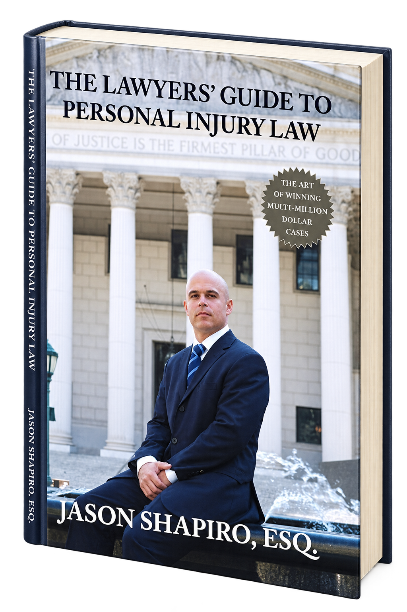
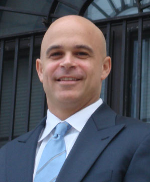

Indemnización por lesión de nacimiento para un niño que sufrió daños graves.
Abogados de Lesiones Personales
Dirigido por Jason Shapiro
El bufete está dirigido por Jason Shapiro, un abogado litigante formado en una universidad de la Ivy League, con más de 30 años de experiencia y autor de The Lawyers’ Guide to Personal Injury Law, un libro de texto integral para abogados que representan a demandantes en casos de lesiones personales.
- ¡No Paga Si No Ganamos Su Caso!
- Consultas Gratis
- Se Habla Español

30+Años de Experiencia
$300M+En Resultados
50+Recuperaciones de $1 Millón o Más
AV Preeminent®Martindale-Hubbell AV Preeminent
Seleccionado a Super Lawyers
- Accidentes de Andamios
- Accidentes de Construcción
- Accidentes de Vehículos
- Accidentes en Propiedades
- Negligencia Médica
Resultados Comprobados. Atención Personal.
Resultados Comprobados Para Neoyorquinos Lesionados
Lesiones graves, hechos disputados y defensas difíciles, manejados con criterio experimentado y participación directa del abogado.
Veredicto para un pasajero expulsado en un choque de vehículos.
Indemnización en una colisión de vehículos disputada.
Publicidad de Abogados. Los resultados anteriores no garantizan un resultado similar.
Representación Especializada en Lesiones Personales
Tipos De Casos Que Manejamos
Por Qué Elegir Nuestro Bufete
Bufete Líder en Lesiones Personales ¡No Paga Si No Ganamos Su Caso!
Estamos dedicados a representar a las víctimas de accidentes en cada paso del camino.
Fundado por Jason Shapiro — un destacado abogado litigante, conferencista y autor del libro de texto The Lawyers’ Guide to Personal Injury Law (Guía del Abogado sobre la Ley de Lesiones Personales) — el bufete maneja accidentes de andamios, construcción, vehículos motorizados y propiedades, y negligencia médica.
Estaremos A Su Lado
Por Qué Elegir Shapiro Law Offices, PLLC
No Paga Si No Ganamos Su Caso
Usted no pagará honorarios de abogado a menos que ganemos su caso
Abogado Litigante de la Ivy League
El bufete es dirigido por un destacado abogado litigante educado en la Ivy League
Consultas Gratis
Llame o agende una consulta completamente gratis
Autor Publicado
Autor de The Lawyers’ Guide to Personal Injury Law, el libro de texto sobre casos de accidentes y lesiones
Atención Personal
Un enfoque personal y directo para guiarlo en sus momentos difíciles
Se Habla Español
Sirviendo la ciudad de Nueva York y los condados vecinos en inglés y español
Nuestros Abogados
Conozca a Nuestros Abogados
Shapiro Law Offices, PLLC es un bufete litigante. Su caso lo manejan abogados que llevan casos a juicio — no se pasa de mano en mano.

Jason Shapiro, Esq
FundadorAbogado litigante educado en una universidad de la Ivy League que representa a víctimas de accidentes en la ciudad de Nueva York y los condados vecinos. Es conferencista y autor del libro de texto The Lawyers’ Guide to Personal Injury Law, una guía integral para abogados de lesiones personales.
Ha sido seleccionado para Super Lawyers y posee la calificación AV Preeminent de Martindale-Hubbell — la más alta distinción entre colegas por capacidad legal y ética profesional.
Ver PerfilHon. Ernest Buonocore
Abogado Litigante PrincipalUn abogado litigante experimentado, exjuez y mediador que aporta una perspectiva distintiva a casos graves de lesiones personales.
Él Escribió El Libro
The Lawyers’ Guide to Personal Injury Law
Escrito por Jason Shapiro, este libro de texto integral para abogados de lesiones personales analiza, en profundidad, el manejo de todo tipo de casos de accidentes y lesiones. Cuando otros abogados quieren aprender cómo manejar un caso de lesiones, este es el libro que consultan — y su autor es el abogado que manejará el suyo.
¿Ha Sufrido Una Lesión? ─ Llame 718.295.7000
Ubicación de la Oficina
Shapiro Law Offices, PLLC
3205 Grand Concourse, Suite 1
Bronx, NY 10468
3205 Grand Concourse, Suite 1
Bronx, NY 10468
Teléfono: 718.295.7000
Se habla español
Contáctenos Hoy Con Un Miembro de Nuestro Equipo.
Los campos marcados con “*” son obligatorios
Estaremos A Su Lado.
¡No Paga Si No Ganamos!
Llame ahora para hablar con un abogado — la consulta es gratis